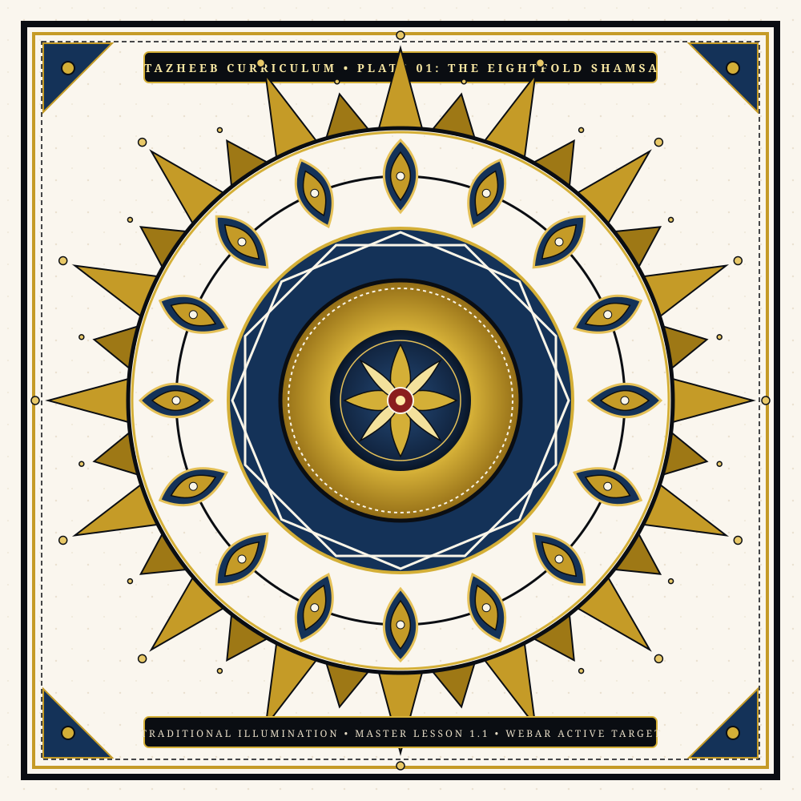

The Eightfold Shamsa
شمسه هشتپر و هندسه دایره
Constructing the foundational octagram star grid using compass division. Covers parchment preparation, ground gesso layering, and burnishing geometry for 32-ray radial burst coronas.
Radial Girih
Octagram Star
Gesso Ground
Ray Corona